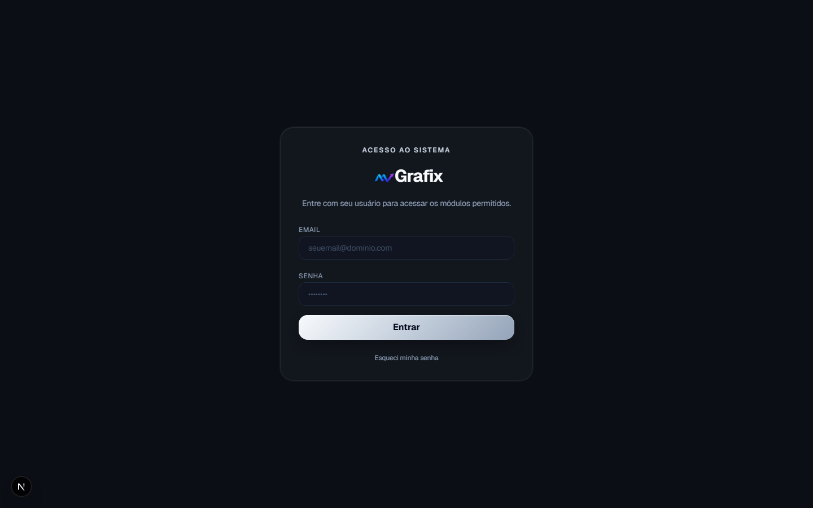
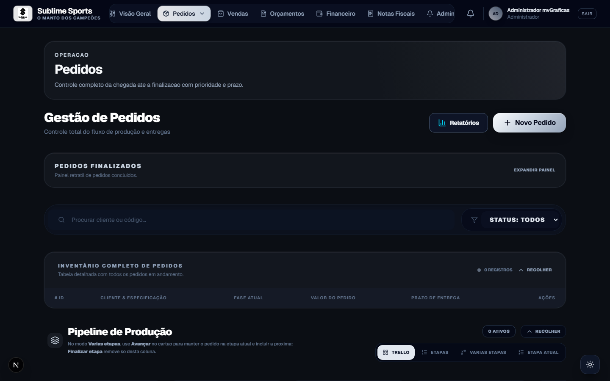
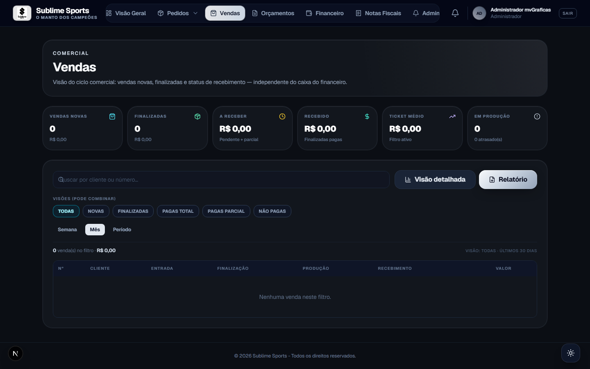
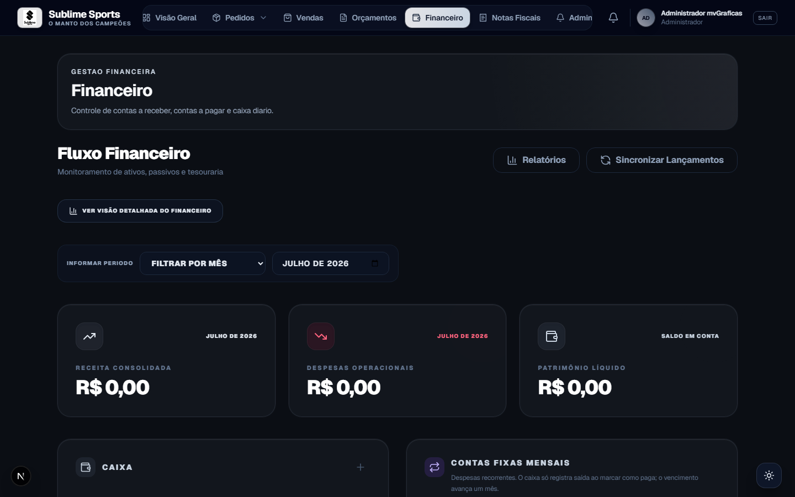
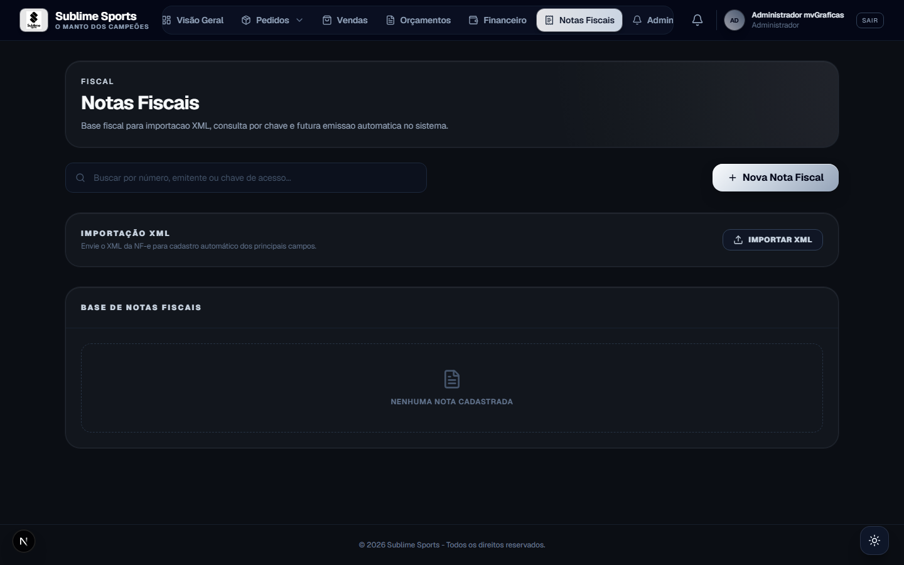
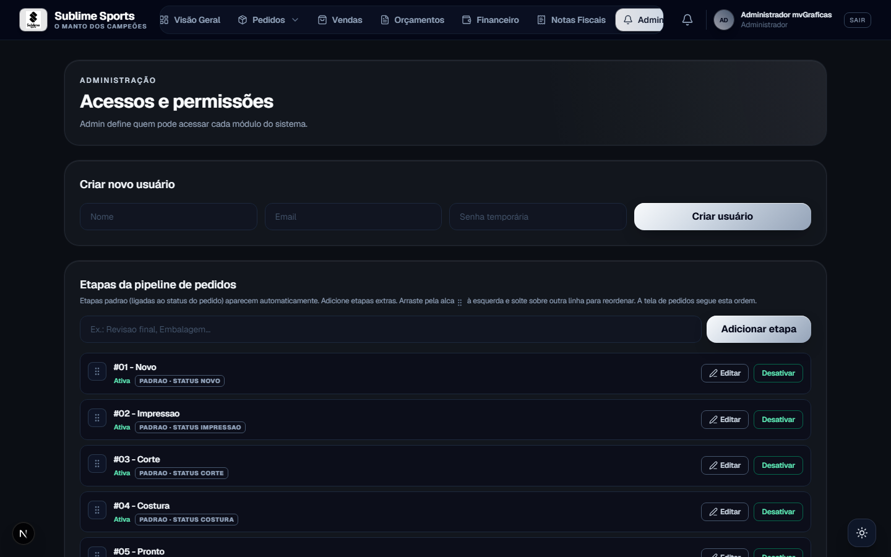

mvflow
Sistema de gestão para gráficas de sublimação e confecção esportiva
Use → ou espaço para avançar
O cenário
WhatsApp, planilhas e cadernos. Ninguém sabe em que etapa está cada peça.
Propostas sem padrão, sem PDF, sem conversão direta em pedido de produção.
Recebíveis, custos e contas fixas desconectados do que saiu da produção.
A solução
ERP operacional que une comercial, produção e financeiro — pensado para sublimação, uniformes e confecção esportiva.

Visão Geral
Monitore produção, orçamentos e saúde financeira em um só lugar.
Plataforma
Comercial
Mesma estrutura do pedido: produto, malha, aplicação, cores e grade.
Produção
Grade de tamanhos, detalhes da peça, arte por item e folha de produção.

Chão de fábrica
Novo → Impressão → Corte → Costura → Pronto → Entregue
Separado do caixa: o comercial enxerga o ciclo sem misturar com a tesouraria.

Tesouraria
Receita, despesas, patrimônio, caixa e contas fixas — no mesmo fluxo dos pedidos.

Controle


Fluxo
Cada etapa alimenta a próxima — sem retrabalho e sem planilha paralela.
Por que mvGrafix
Impressão, corte, costura — etapas que o time já conhece.
Tradicional, babylook e infantil no mesmo pedido.
Vendas e financeiro com papéis claros para cada área.
Pedido finalizado gera recebível e entrada no caixa.
Sua gráfica sob controle — do orçamento à entrega.
Obrigado